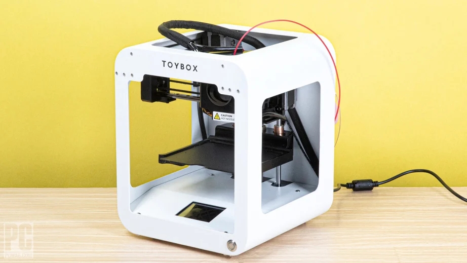

3D printing, also known as additive manufacturing, is a process of creating three-dimensional objects by adding material layer by layer based on a digital model. Unlike traditional subtractive manufacturing methods, where material is cut away from a solid block to create the desired shape, 3D printing builds objects layer by layer, allowing for complex geometries and customized designs.
The process typically involves the following steps:
1. Design: Creation of a digital 3D model using computer-aided design (CAD) software or by 3D scanning an existing object.
2. Slicing: The 3D model is sliced into thin horizontal layers using slicing software. This slicing process generates instructions (G-code) that guide the 3D printer on how to build each layer.
3. Printing: The 3D printer reads the G-code instructions and starts depositing material layer by layer according to the design. The material used for printing can vary depending on the type of 3D printer and the intended application, including plastics, metals, ceramics, and even biological materials.
4. Post-processing: Once printing is complete, the object may require additional finishing processes such as sanding, painting, or assembly, depending on the desired final appearance and functionality.
How actually 3D printer looks like?

1. Frame: Provides support and stability.
2. Print Bed: Platform where objects are built.
3. Extruder: Melts and deposits printing material.
4. X, Y, Z-Axis Mechanisms: Control movement in three dimensions.
5. Control Electronics: Interpret G-code instructions and manage printer functions.
6. Display and User Interface: Allows interaction and monitoring.
7. Power Supply: Provides electrical power.
8. Filament Spool Holder: Holds printing material spool.